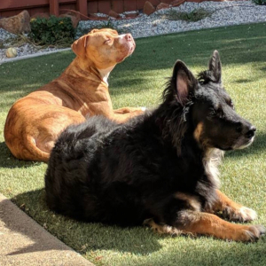

Teddy
This is my brother, Teddy. He's a German Shepherd corgi mix. Like a German Shepherd with smol legs. He's my best friend, even when we get into tiffs over toys or a spot on the couch,
I know we'll be cuddling at the end of the day. He showed me the ropes when I got adopted - I came from a place that never really taught me how to be a dog, I didn't even know how to play with
toys when I first got to my new home. Teddy taught me to play tug of war, chase squirrels, and bark at the UPS drivers.
 Humans
Humans
I love humans! Humans are great. They give me treats and food and belly rubs. These humans in particular are my favorite ones. They brought me into their house and let me sleep on their couch.
I even have my own bed! It's a lot smaller than theirs, but I'm not allowed to sleep in their bed anymore because apparently I take up the majority of a California King size bed (somehow).
Sometimes they leave for a long time during the day and I'm pretty sure they're never coming back, but then they do and I get really excited. Why don't they just stay home all day like me?
It's pretty great. I get to lay on the couch all day and sleep. Whatever they're doing, it can't be as great as that. But they always come back for me and that's the most important thing!